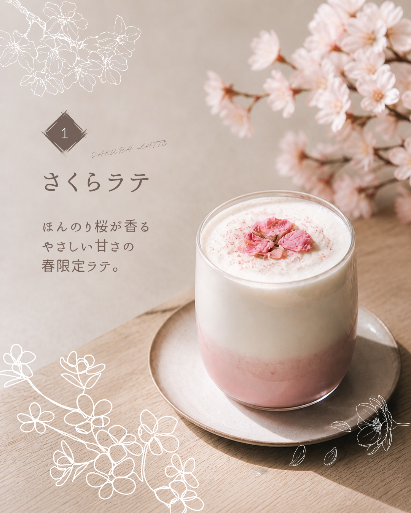
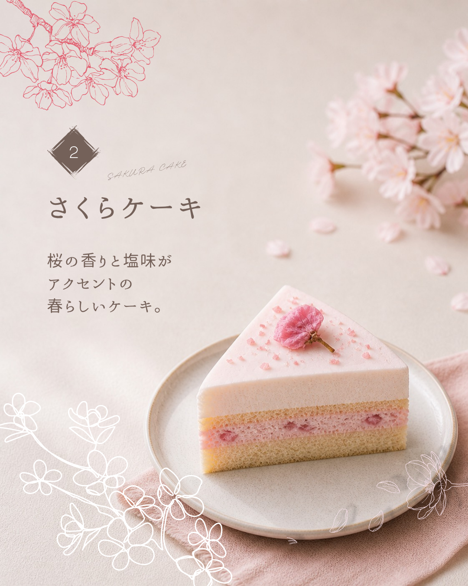
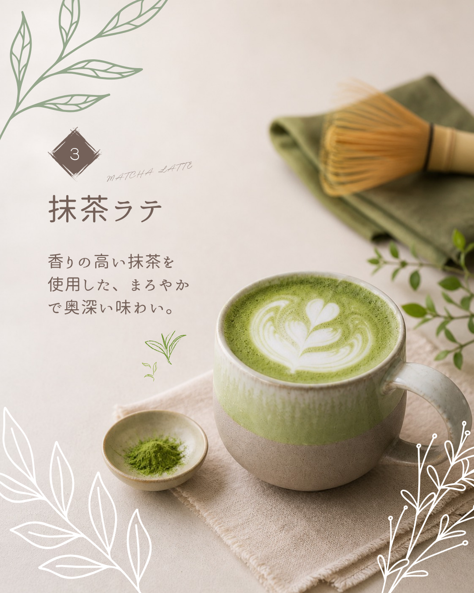
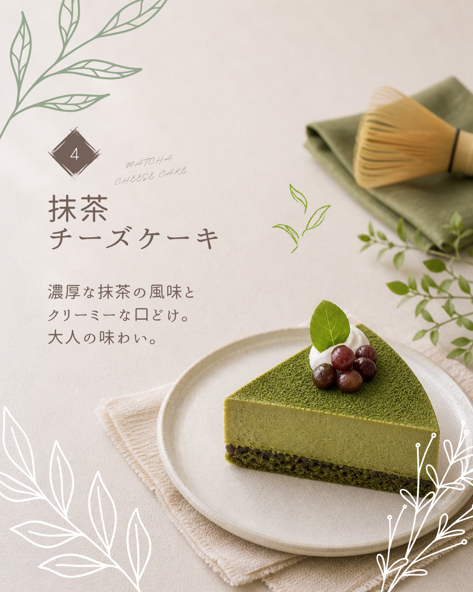
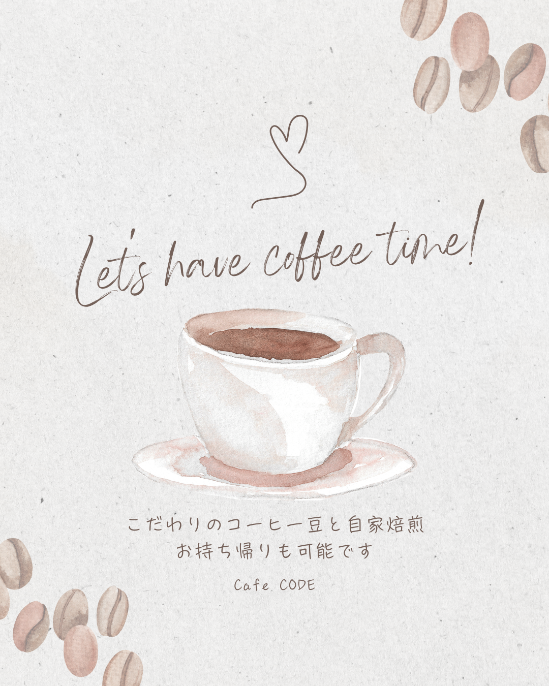

Design
カフェの季節限定メニュー紹介
カフェの季節限定メニューを、SNSで見やすく伝えるために制作した投稿デザインです。






Overview
カフェの季節限定メニューを紹介するSNS投稿デザインです。 商品の魅力が伝わるように、写真の見せ方・配色・余白のバランスを意識して制作しました。
表紙だけでなく、メニューの内容や雰囲気が順番に伝わるよう、複数枚の投稿として構成しています。 SNS上で流れてきたときにも目に留まりやすく、最後まで見てもらえるような見やすさを大切にしました。
Concept
季節限定メニューの特別感と、カフェらしい柔らかい雰囲気が伝わるように制作しました。 写真を主役にしながら、文字情報が読みやすくなるようにレイアウトを調整しています。
全体の印象が重くなりすぎないよう、余白を活かした構成にし、落ち着いた色味でまとめました。 SNS投稿として見たときに、商品のおいしさや季節感が自然に伝わるデザインを目指しています。
Target
カフェの新メニューや季節限定メニューに興味がある人、休日のお出かけ先を探している人に向けて制作しました。 短時間で内容を把握できるように、情報量を整理しながら、視線の流れが自然になるよう意識しています。
制作情報
- 制作期間：約1日（作業時間：約2〜3時間）
- 担当範囲：投稿デザイン作成 / レイアウト設計 / 配色調整 / 文字組み
- 使用ソフト：Canva
- 制作形式：SNS投稿用デザイン
制作ポイント
季節感とカフェらしい柔らかさが伝わるように、写真を主役にしつつ、文字情報が読みやすい構成にしました。 画像を見た瞬間に内容が伝わるよう、見出し・写真・説明文の優先順位を意識しています。
また、SNS上で見たときに目に留まりやすいよう、余白とコントラストを調整しました。 複数枚投稿として見たときにも流れが自然になるよう、各ページのデザインに統一感を持たせています。